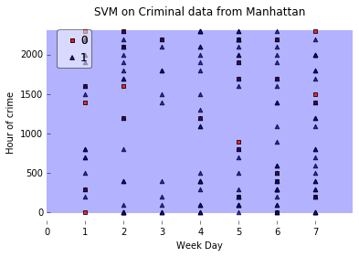
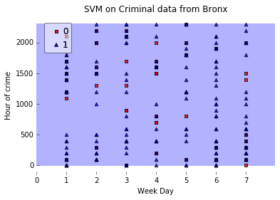
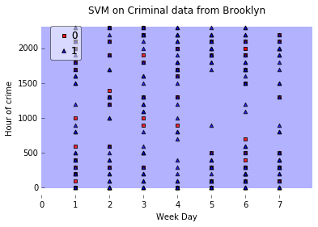
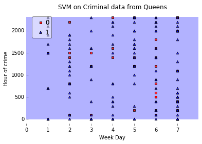
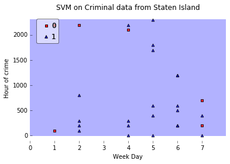

Dwelling deeper into crimes
Our project aims at exploring four different data sets in New York City, and how they correlate with each other.
The dataset we work most with is some data of high school dropout rates in all schools in the city from 2005-2012.
We have data over dropout rates between districts, genders, ethnicities, years and planned length of education.
We do some basic barplots to compare this data, and do a K-nearest neighbour analysis for different number of neighbours,
predicting for high, medium and low dropout rates.
We extracted criminal data set for New York city. Sadly there is not available good criminal data over many years, only for the year 2015.
Therefore we could not predict crimes over the next span of years, instead we used support vector machine to examine if we could see any pattern in the data.
The idea was to examine when serious crimes (Rape and Murder) happen (at what weekday and at what time) in each neighbourhood in New York, to know when the city is most dangerous.
Support vector machine is a supervised learning that analyze data used for classification and regression analysis,in our case we used classification where the crime was an output.
We fed information into a python SVM model, where each data point either belonged to the class Rape or Murder,
then SVM training algorithm builds a model from the training dataset that assigns new examples to one category or the other, making it a non-probabilistic binary linear classifier.
Then we used the test Data set to evalute the error of the Model. The result can be found below:
Let's start by running the SVM on data from Manhattan. The testing error there was 15.0%:

Next we run it on Bronx. The testing error there was 23.3%:

Next we run it on Brooklyn. The testing error there was 26.1%:

Then we have Queens. The testing error there was 25.1%:

And finally we have Staten Island, where the testing error was: 21.4%:
